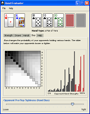

The Hand Evaluator can compute and summarize a detailed evaluation of any Hold'em hand. Custom cards can be entered along the top by clicking on each of the card buttons. Once hole cards have been entered, some statistics become immediately available. For instance, the draws to the flop, turn, and river, for that hand will be shown under the draws tab. Most calculations, however, also require board cards to be entered as well.
Your equity in the pot takes into account how often you would win a pot outright, how often you would lose the pot, and how often you would tie and end up sharing the pot with your opponents. For example, if you will always win the pot outright, then you are said to have 100% equity. If you will always lose the pot, then you are said to have 0% equity. If you will always tie against one opponent, then you have 50% equity. If you will always tie against two opponents, then you have 33% equity. If you win the pot outright half the time, and lose the pot outright the other half the time, you have 50% equity. If you win the pot outright one third of the time, and lose the pot outright two thirds of the time, you have 33% equity.
In the simulation results shown, all unspecified board cards are randomly generated in each simulation. This gives you an estimate of your all-in equity since the results correspond to what happens when you are all-in against your opponents and you get to see all the remaining board cards. Because these simulations automatically generate the remaining board cards for you, the simulations will start running as soon as you specify any of your cards.
In each trial of the simulation, each opponent is assigned hole cards according to the distribution of hands indicated by the currently selected opponent preflop tightness bias. The opponent preflop tightness bias can be selected using the slider at the bottom of the Hand Evaluator window. This slider is explained in more depth in the Bias tab description below.
At the bottom of the Strength panel, the hand's pre-flop hand ranking is also given. The pre-flop hand rank was determined by simulating millions of hands and computing the performance of each starting hand. The best hand (AA) is ranked #1, while the worst hand (72o) is ranked #169.
Positive Potential is the probability that if you are
currently behind, the next card to come will make your hand
the best.
Negative Potential is the probability that if you
currently have the best hand, that the next card to come
will put you behind.
The nuts (the best possible hand) is also displayed on this screen.
On the left is a 13x13 matrix which represents all 169 starting hands types. Each cell is shaded to represent the current weighting it receives. The darker a cell, the more weight it is given in the calculations.
The slider bar changes the estimated pre-flop tightness of your virtual opponents. If you drag the slider all the way to the left, the entire table becomes black. This means that your opponents would see the flop with any two cards, and the biased values will be identical to uniform weighting. If you move the slider all the way to the right, only hands like AA, KK, and AK suited are probable.
The histogram on the bottom right shows the distribution of hand ranks for all of the 1081 opponent hands, weighted by the probability that the hand was played (from the weight table). All of the bars drawn in grey are hands that are worse than your hand. The bars drawn in red represent all of the opponent hands that are better than your hand. The distribution depends on the tightness of your opponents and will change as you move the slider.
The x-axis is the strength of the opponent hands (with the weakest hands to the left and strongest to the right). The height of each bar shows the relative proportion of hands for each strength class.